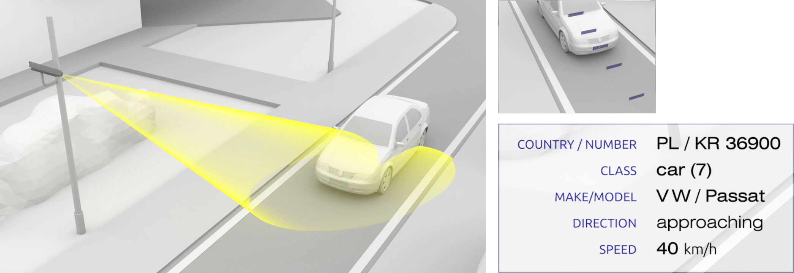

1. Operating principle¶
The NeuroCar - Vehicle Identification (NeuroCar VI) system is used for automatic detection and identification of vehicles by analyzing the video stream provided by the camera. The basic way of identification is recognition of the license plate - in the extended version it is also possible to automatically recognize the category of the vehicle, its make (model version), speed and country of origin.
A vehicle driving within the field of view of the camera is automatically detected, and then the license plate is recognized and retrieved at various points (shots). As a result, a measurement record containing a picture of the vehicle and various types of data extracted from image analysis is stored in the system’s memory.
The data collected by the measuring devices is stored in a central system (BackOffice) installed in the cloud, with the help of which users can comfortably search and analyze this data. The central system also has diagnostic functions to improve control of the correct operation of the measurement infrastructure.
Thanks to its modular design and the use of open protocols, easy integration is possible – users can add their own data sources or can attach their own processes to the system using information collected in the central system - through WEB API.